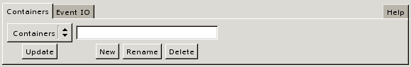
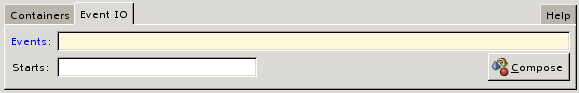

- [Topic]
- CMIO
The CMIO (Common Music Input/Output) window is a graphical tool designed to facilitate the generation of musical data to and from sound synthesis and display applications. Which applications are active at any given time depends on what software systems have been loaded into Common Music; the Systems and Files pages in the CMIO window can be used to dynamically configure and load external software such as CLM, CMN and Midishare into the Lisp environment. In addition, the field settings on the various tabbed pages can be initialized to a user's preference by passing appropriate arguments to the cmio function when the window is created.
Window Layout
A CMIO window consists of four GUI components:
- A Sources notebook holds tabbed pages that relate to creating and generating event data.
- A Targets notebook holds tab pages related to sound synthesis and display applications.
- An Executive frame manages the system's working directory and current target file.
- A message line displays color coded information related to working in the window.
Each tabbed page contains a set of fields representing the input/output features of a given application. The right-justified pages (such as Help or Systems) relate to more general features of the window or of the surrounding Lisp environment.
Example 1. The four components of a CMIO window: Sources, Targets, Executive and the Message line. Event IO is the currently active source page and Midi is the currently selected target.
![[cmio1.png]](cmio1.png)
- Blue labels mark required fields that must contain infomation before the page can execute.
- Yellow backgrounds indicate fields that will be evaluated when the information is accessed.
- White backgrounds indicate fields that either contain uninterpreted text or are read to produce a Lisp value. It is possible to force evaluation in a white field using the #.expr notation, where expr is a Lisp expression that will be evaluated to produce the contents of the field.
- The Message line uses colors to classify the type of message displayed: green represents a normal message, yellow indicates a warning or notification, red signifies an error condition.
Error Handling and Notification
A CMIO window facilitates musical tasks that would otherwise be
accomplished by evaluating expressions inside the Lisp REPL
window. Under normal conditions, lisp evaluation errors will cause the
REPL to stop execution by signalin a error break. However, a
CMIO window executes via foreign function callbacks that do
not expect their flow of control to ever be interrupted. As a result,
Lisp error breaks inside a CMIO window will likely cause the window to
freeze and —in some cases — may even cause the Lisp
session to immediately terminate. For this reason a CMIO window
attempts to evaluate its REPL calls in such a way that error messages
are reported in the message line but without ever stopping in a Lisp
error break. If you need to enter the Lisp break loop in order to
debug a problem then set the global
variable *cm-break-on-errors* to true, but realize that
once the break condition is resolved the CMIO window (and possibly the
whole GTK session) may no longer work correctly or at all.
Display Pages
Each source or target application (task) is represented by a tabbed notebook page inside the window. The Sources notebook relates to specifing source material in CM: generating musical event data and defining aggregate structure with container objects. The Targets notebook pages define various destinations that musical data can be rendered to. The following sections briefly describe the layout and functionality of each page.
Sources Notebook
Containers
The Containers page is used to create, rename and delete seq containers.

- The Containers menu lists all the exisiting named seqs. Selecting a seq from the menu places it in the name buffer for editing.
- The Name buffer can be set to the name of a sequence to edit or create.
- The New button creates a sequence using the name specified in the name buffer.
- The Rename button renames the currently selected seq in the Containers menu to the name in the edit buffer.
- The Delete button deletes the seq listed in the name buffer and all of its subobjects.
- The Update button refills the Containers menu with any new seqs created ouside the window (ie in the Lisp REPL) since the menu was created or last updated.
Event IO
The Event IO page is used to generate musical events to the currently selected target page. Using the Event IO page in conjunction with the current target page is equivalent to calling the events function in the REPL.

- The Events buffer must be set to a valid Lisp expression that, when evaluated, produces musical events to schedule in the currently selected target page. This buffer is equivalent to the first argument to the events function.
- The Starts buffer contains a number or list of numbers specifying the start time offset of the events in the target score. This buffer is equivalent to the optional third arguement to the events function. If no start time offset if provided it defaults to zero. It is sometimes useful to specify a negative offset. For example, to render a selection that starts at time 10 in a plotter window at time 0 in the score, specify a -10 offset in the Starts buffer.
- The Compose button renders the musical events to the currently selected target page.
Help
The Help page is not yet implemented.